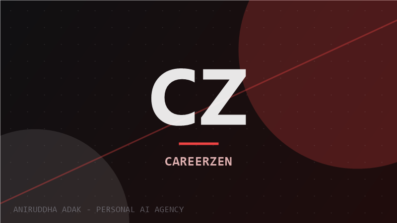
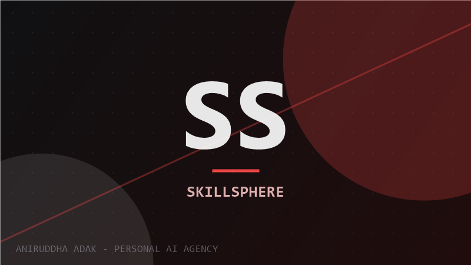
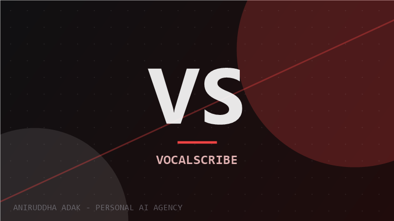
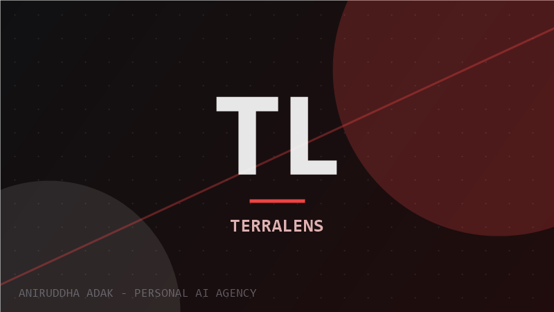
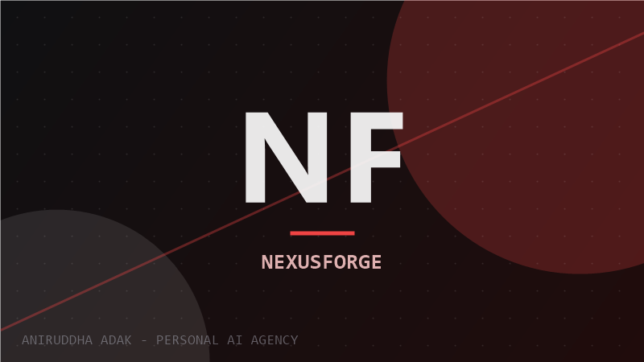
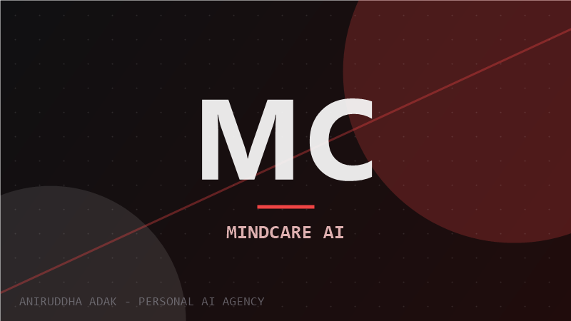

AI Agent Engineering
Multi-agent systems that plan, delegate and self-correct using LangGraph and CrewAI. From repo-maintenance bots to research assistants that cite their sources.
I build software that thinks through steps, adapts when something changes, and finishes the job without being babysat. This site is my one-person AI agency: the engineering work, the open source record, the writing, and a field guide to the age of personal superintelligence.
 AI AGENT ENGINEER · KOLKATA
AI AGENT ENGINEER · KOLKATA
Every service below is something I have actually built, broken, debugged and shipped — for my own products and for open source projects used by thousands of developers.
Multi-agent systems that plan, delegate and self-correct using LangGraph and CrewAI. From repo-maintenance bots to research assistants that cite their sources.
Full-stack products where the UI is only the surface: resume analyzers, real-time dashboards, voice tools. Next.js front ends over agent back ends.
Retrieval pipelines that turn messy documents into answers with citations. Enterprise knowledge management without the enterprise price tag.
Bug hunting across the ecosystem: 118 pull requests in OpenClaw alone, fixes in Gemini CLI, Rocket.Chat and more. Your repo could be next.
350+ articles explaining agents, harnesses and model releases in plain language. Plus generative engine optimization so AI engines cite your product.
Designing your own stack of agents, automations and workflows so one person can operate like a team. My own system runs my research, writing and shipping.
Not stars or forks — actual pull requests merged by maintainers into production open source projects, counted straight from the GitHub API.
Largest single-repo contribution record, including merged fix #102951 for a timeout wrapper that ignored cancellation signals.
Sustained contributions to Google's Gemini command-line tool — the agent harness he uses daily, improved in public.
Plus Rocket.Chat, aider, opencode, and a cherry-picked crash fix in NousResearch hermes-agent that preserved authorship.
Live deployments, open source code, honest descriptions. The full archive lives on the projects page.

Final-year flagship: analyzes resumes against job descriptions with voice mock interviews. Gemini + Sarvam AI, Lighthouse 94, fully MIT open source.

Ten micro-apps for well-being and productivity behind one roof: habits, focus, tracking and community in a single Next.js codebase.
`
"Where your voice becomes words." Instant transcription built on AssemblyAI speech intelligence with a clean React interface.
`
Environmental insights app powered by Gemini, built for Earth Day as a DEV challenge submission. Your planet, visualized and explained.
`
A multimodal AI agent hub wired into Notion through MCP: capture notes, ask questions across workspaces, let agents do the filing.
`
A judgment-free AI companion for journaling and mood tracking, launched on Product Hunt. Careful prompt design meets humane UX.
`“The interesting question is no longer what can AI do. It is what can one person do when AI does the rest. We are living through the moment individuals gain leverage that entire companies had ten years ago — and most people have not noticed yet.”
— ANIRUDDHA ADAK · kolkata, 2026The impressive part is not just the number of merged fixes; it is the repeatable loop behind them. Agentic open-source work needs good target selection, small patches, maintainer empathy, and enough verification that the volume does not become noise.
unsolicited public comment on the 373-merged-fixes article · linked on the writing page
What we should be wildly optimistic about — and what deserves a hard honest look. Timelines, predictions and probability tags from someone who reads the papers daily.
Aniruddha Adak is an AI Agent Engineer and Full-Stack Developer based in Kolkata, India. He builds autonomous agents and agentic web applications, maintains 145+ public repositories on GitHub, has 354+ pull requests merged into other people's open source projects, and writes technical articles for the developer community on DEV.
Python, TensorFlow, React, Next.js, Node.js, TypeScript and Tailwind CSS for applications; LangGraph, CrewAI and retrieval-augmented generation (RAG) for agent systems; plus MongoDB, Docker, Git, Astro.js and Qwik.js.
CareerZen — a voice-enabled ATS resume analyzer combining Google Gemini and Sarvam AI with mock-interview practice. It scored 94 on Lighthouse performance and is fully open source under MIT.
The GitHub API records 800+ pull requests authored, with 354 merged into external projects including OpenClaw (118), Google's Gemini CLI (44), Rocket.Chat and aider. Hacktoberfest completed with 200+ merged PRs in both 2024 and 2025.
On DEV Community at dev.to/aniruddhaadak: 350+ posts on AI agents, harnesses, model releases and build logs, earning 51 community badges including a writing challenge win.
Yes — agentic AI projects, full-stack builds, RAG systems and technical writing. Email aniruddhaadak80@gmail.com or use any link on the contact page.
Tell me what you are building. If autonomous systems, RAG or serious full-stack speed would help, we will get along.
start a conversation →